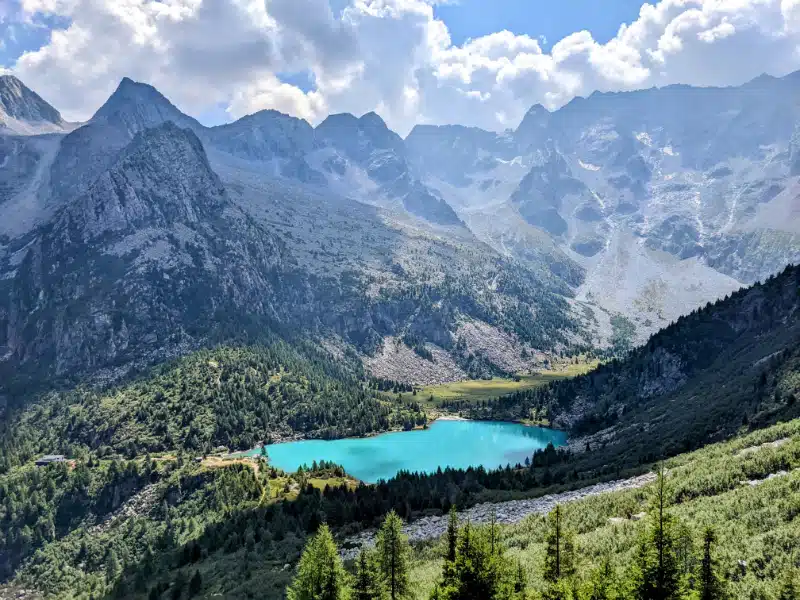
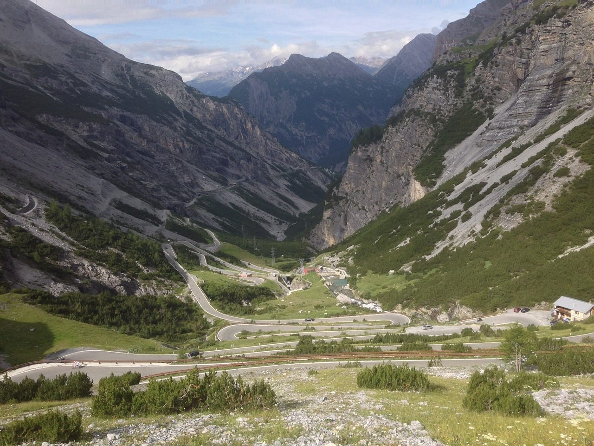

I migliori sentieri per trekking della Lombardia
Siamo nate e cresciute in Lombardia. In realtà ho anche studiato giurisprudenza in Lombardia e mi sono sposato con Felicity in Lombardia. Isabella e Maya sono nate in Lombardia per cui ho un forte legame con questa bellissima regione del nord Italia.
Da sempre amante del trekking non potevo non proporvi degli itinerari ed escursioni da fare in Lombardia di varia difficoltà (e lunghezza) pensati sia per escursionisti esperti in cerca di nuove sfide ma anche percorsi dedicati alla portata di tutti.
La via dei Monti Lariani
Iniziamo con La via dei Monti Lariani, un percorso escursionistico, progettato dal CAI di Como, che parte da Cernobbio e giunge fino a Sorico, disegnando un itinerario di ben 125 chilometri da affrontare in almeno sei tappe, pernottando nei rifugi che si trovano lungo la via. Più breve e da poter completare in circa quattro ore di cammino è invece la Greenway del lago, che collega Colonno e Cadenabbia di Griante, passando per Sala Comacina, Ossuccio, Lenno. In zona si trova anche villa Balbianello e Tremezzo, dove spicca Villa Carlotta.
Per gli appassionati di storia e di montagna
Appassionato di storia e di montagna? Ideale per escursioni di una giornata è il Percorso della Memoria, in Valcamonica. Ripercorre le mulattiere usate dai militari durante la Prima Guerra Mondiale: lungo il tragitto, non è raro incontrare postazioni destinate alle mitragliatrici antiaeree, grotte di ricovero e garitte e fortificazioni, come quelle che spiccano in cima al Doss de l’Ora.
Periplo del Monte Aviolo
Se preferisci un’escursione di due giorni ti puoi avventurare nel Periplo del Monte Aviolo, per farti incantare dai boschi di pini mughi, larici e dallo spettacolo offerto dal Lago Aviolo. Il Periplo del Monte Aviolo è un sentiero escursionistico di media difficoltà che si snoda attorno al Monte Aviolo, situato nel Parco Naturale Regionale della Lessinia, in provincia di Verona. Il percorso, lungo circa 14 chilometri, offre panorami mozzafiato sulle montagne circostanti e sulla pianura padana. Il sentiero inizia dal paese di Avio e si sviluppa su sentieri forestali e mulattiere, con alcuni tratti più impegnativi che richiedono un buon passo sicuro. Durante il percorso si possono ammirare diverse varietà di flora e fauna, tra cui boschi di faggi e abeti, prati fioriti e rocce calcaree. Il punto più alto del percorso è il Monte Aviolo, che culmina a 1456 metri di altitudine. Dalla cima si gode di una vista spettacolare sulla Lessinia, sul Monte Baldo e sul Lago di Garda. Il Periplo del Monte Aviolo è un’escursione adatta a tutti gli escursionisti con un buon livello di allenamento. Il percorso è ben segnalato ed è possibile completarlo in circa 6-7 ore.